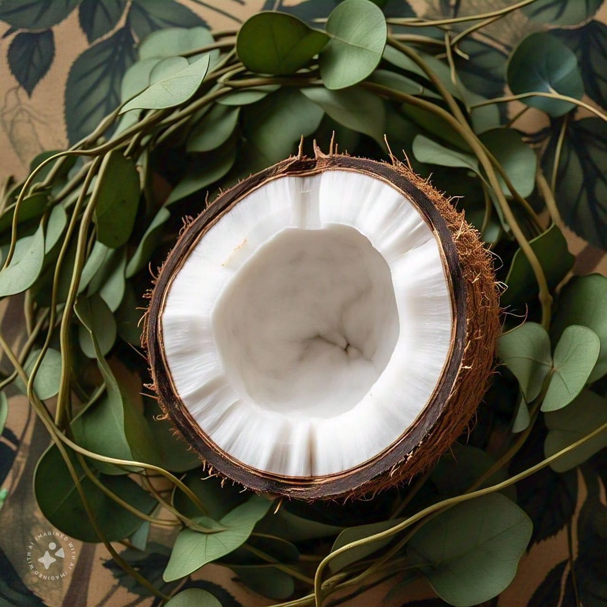
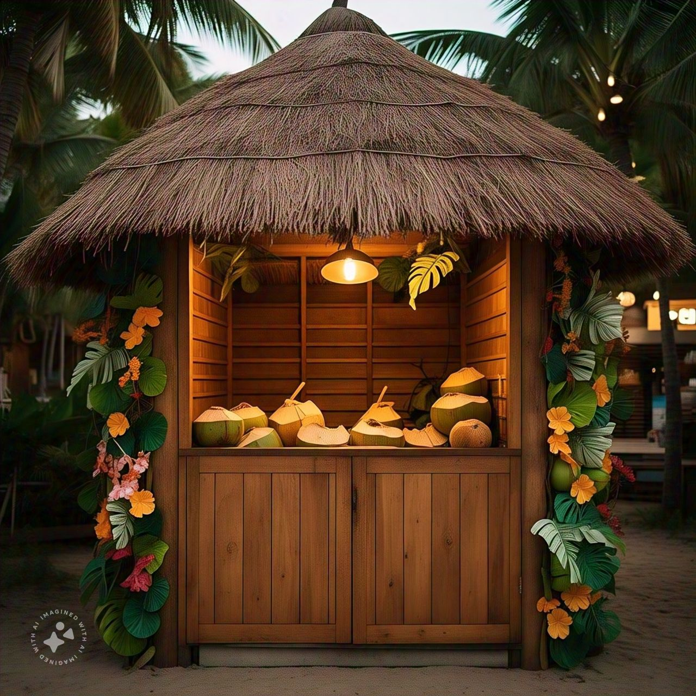

A Sweet Oasis é uma franquia especializada na produção de gelatos artesanais,
direcionados especialmente ao público vegano, diabéticos e pessoas com intolerância à lactose.
Combinando sabor, saúde e sustentabilidade, nossa missão é oferecer uma experiência única
e
inclusiva para todos que
desejam desfrutar do autêntico sabor de um gelato,
sem abrir mão de suas
necessidades alimentares ou de seus valores ambientais.
Nossos produtos são elaborados com ingredientes de alta qualidade e cuidadosamente selecionados.
Ao invés de laticínios convencionais, utilizamos leite de castanhas como base, o que confere uma
textura
cremosa e um sabor rico aos nossos gelatos. Esse leite vegetal é obtido a partir de castanhas
frescas,
que passam por um processo de extração que preserva nutrientes essenciais, como proteínas e gorduras
saudáveis.
Além disso, cada sabor é adoçado com frutose, um açúcar natural das frutas, e
estévia,
um adoçante de origem
vegetal que realça o sabor doce sem elevar os índices glicêmicos,
sendo seguro e ideal para diabéticos e
para aqueles que buscam reduzir o consumo de açúcares
artificiais.
PROJETOS

FESTA DE INAUGURAÇÃO NA PRAIA

EMBALAGEM VEGETAL
PROPAGANDA NA GLOBO

QUIOSQUES PERSONALIZADOS